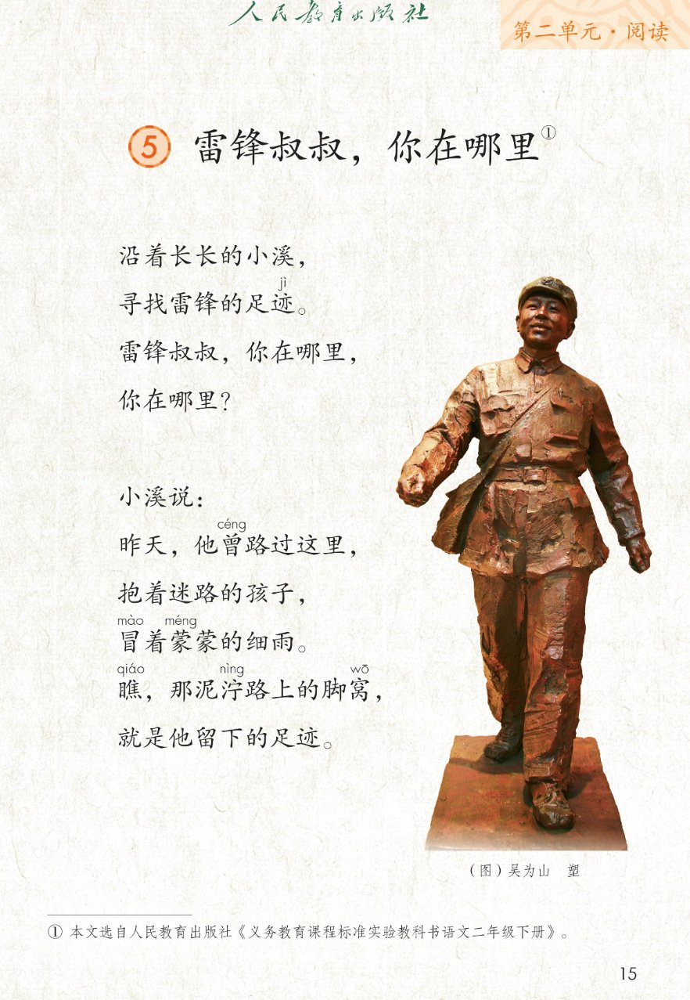
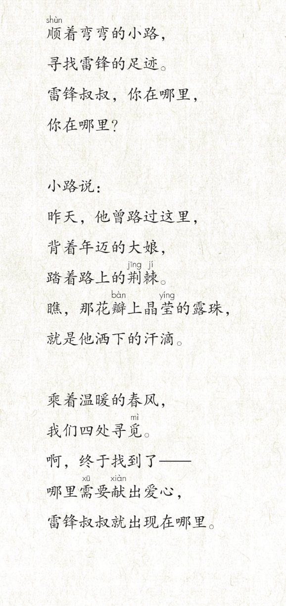
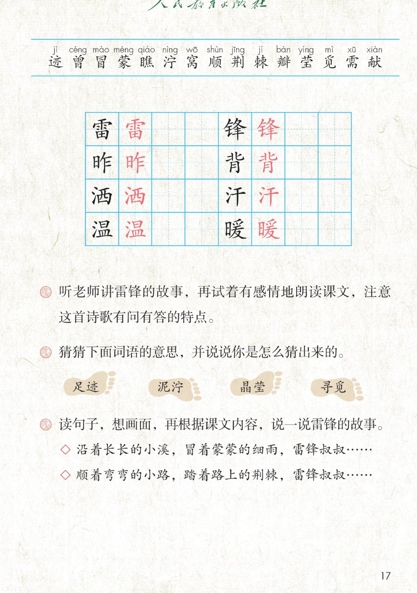

×
🔊 手机听不到声音怎么办？
① 先把手机
媒体音量调大 ，确认没开静音、没连蓝牙耳机；在微信里打开的，点右上角「⋯ → 用浏览器打开」。
② 还是没声音？到应用商店免费下载
Microsoft Edge 浏览器 （它自带朗读发声），用它打开本页面就能出声。
③ 换了 Edge 仍然没声音，说明这部手机的
硬件/系统不支持 网页朗读（多为老旧机型）；近几年买的新手机一般都能正常播放。
→ 打开声音自检
🌻 第 5 课《雷锋叔叔，你在哪里》· 有声图文带读
统编版语文 · 第二单元·阅读 · 课本 第 15~17 页 · 一首有问有答的儿童诗
课文 5 节 · 25 行
会认字 15
会写字 8
听写词 10
近义词 4 组
深入理解 8 题
本课本领 有问有答地朗读·猜词·说雷锋的故事
🎧 五步学（可随时点任意一行、一个字、一个词单独听）： ① 听读课文 ——5 个小节、25 行，一行一行读，读到哪一行哪一行发光；开「跟读」后读完一行留时间自己读。② 学字词 ——15 个会认字、8 个会写字（含书写提示），点一个读一个。③ 词语·听写·造句 ——读课本第 17 页三道课后题，猜 4 个词语的意思，听写 10 个词，再听 4 组近义词辨析。 ④ 深入理解 ——8 道题（认知 / 理解 / 运用 / 拓展），开放题答案不唯一，先想后看。⑤ 说故事·分工朗读 ——读句子想画面，按顺序说说雷锋的故事；再按有问有答分工朗读全诗。
📚 本册第二单元·阅读（照课本目录）： 5 雷锋叔叔，你在哪里（本课） → 6 千人糕前后连起来看：第一单元找春天、种春天 → 第二单元从帮助别人、珍惜别人的劳动，到保护比自己更弱小的
📖 课文出处（课本第 15 页照录） ：① 本文选自人民教育出版社课本第 15 页插图说明：（图）吴为山 塑
点节前的 ①~⑤ 听整节
🔁 跟读模式：关
👁 隐藏注音（自测用）
注音只标本课要认、要写的字，读音照课本第 15~17 页，每个字只在第一次出现时注
🎤 朗读要求 · 有感情地朗读，注意「有问有答」（课后题①的老师标准） 读准字音 ：迹 jì、曾 céng、蒙 méng、泞 nìng、荆棘 jīng jí、觅 mì；「背着」的背读 bēi （第一声）；一行一行读 ：逗号停得短，句号和问号停得长，不添字、不漏字；「长长」「弯弯」「蒙蒙」这样的叠词读完整；有问有答 ：第 1、3 小节在问 （你在哪里？），读出呼唤、寻找；第 2、4 小节答 （小溪说／小路说），读得平缓像讲往事；两处「瞧」 把人带去看脚窝和露珠，稍读重；两处「就是他……」读得肯定 ；结尾转弯 ：第 5 小节从「四处寻觅」到「终于找到了」，读得亮一点、慢一点，最后一句稳稳收住。
①
沿着长长的小溪，
寻找雷锋的足迹jì 。
雷léi 锋fēng 叔叔，你在哪里，你在哪里？
②
小溪说：
昨zuó 天，他曾céng 路过这里，抱着迷路的孩子，
冒mào 着蒙méng 蒙的细雨。瞧qiáo ，那泥泞nìng 路上的脚窝wō ，就是他留下的足迹。
③
顺shùn 着弯弯的小路，寻找雷锋的足迹。
雷锋叔叔，你在哪里，
你在哪里？
④
小路说：
昨天，他曾路过这里，
背bēi 着年迈的大娘，踏着路上的荆jīng 棘jí 。
瞧，那花瓣bàn 上晶莹yíng 的露珠，
就是他洒sǎ 下的汗hàn 滴。
⑤
乘着温wēn 暖nuǎn 的春风，
我们四处寻觅mì 。
啊，终于找到了——
哪里需xū 要献xiàn 出爱心，
雷锋叔叔就出现在哪里。
🤔 想一想（点我可跳过）
点一张图，听读整页

第 15 页 · 课题、前 2 节与雕塑

第 16 页 · 后 3 节

第 17 页 · 生字表与课后题
📖 人教版《语文》二年级下册 · 课本第 15~17 页 · 图片仅供个人学习，版权归人民教育出版社所有
点一个字，听读音、词语和课文里的句子；照课本第 17 页生字表顺序
结构、部首、笔画与书写提示为通用规范，供参考，以教材和老师的指导为准
雷
léi
雷锋 · 打雷
13 画 · 上下（雨）
雨字头写扁，下面田字别写宽
锋
fēng
雷锋 · 锋利
12 画 · 左右（钅）
金字旁窄，右边捺要舒展
昨
zuó
昨天 · 昨夜
9 画 · 左右（日）
日字旁窄，右边乍的竖要直
背
bēi
背着 · 背书包
9 画 · 上下（月）
上北下月，月里两横别写成撇
洒
sǎ
洒下 · 洒水
9 画 · 左右（氵）
三点水呈弧形，右边是西不是酉
汗
hàn
汗滴 · 出汗
6 画 · 左右（氵）
三点水窄，右边干两横上短下长
温
wēn
温暖 · 温和
12 画 · 左右（氵）
三点水窄，右边皿字底托稳
暖
nuǎn
温暖 · 暖和
13 画 · 左右（日）
日字旁窄，右边撇捺舒展
点一行，听题目、猜词方法和说话支架
📖 课后题（课本第 17 页照录） ：👣 足迹 泥泞 晶莹 寻觅 ◇ 沿着长长的小溪，冒着蒙蒙的细雨，雷锋叔叔…… 本课没有「读一读，记一记」词语表；下面 9 行是三道课后题、四个猜词和两条例句支架。
课后题 ① 听老师讲雷锋的故事，再试着有感情地朗读课文，注意这首诗歌有问有答的特点。
课后题 ② 猜猜下面词语的意思，并说说你是怎么猜出来的。
猜词·足迹 足迹 → 脚印
猜词·泥泞 泥泞 → 路上有烂泥，不好走
猜词·晶莹 晶莹 → 亮晶晶、透亮
猜词·寻觅 寻觅 → 寻找
课后题 ③ 读句子，想画面，再根据课文内容，说一说雷锋的故事。
◇ 例句 1 沿着长长的小溪，冒着蒙蒙的细雨，雷锋叔叔……
◇ 例句 2 顺着弯弯的小路，踏着路上的荆棘，雷锋叔叔……
读两遍 → 你在纸上写 → 报答案 → 听示范句
准备听写 · 共 10 个词
○ ○ ○
点下面的「开始听写」，听到一个词就写一个词。
▶ 开始听写
🔁 再读一遍
👁 看答案
点词听读，点句子听示范句，再自己说一句
1 雷锋 会写字 · 雷、锋
示范句：雷锋叔叔，你在哪里，你在哪里？
✏️ 我也能说：谁 + 在哪里 + 做什么
2 昨天 会写字 · 昨
示范句：昨天，他曾路过这里。
✏️ 我也能说：昨天 + 做了什么
3 背着 会写字 · 背
示范句：背着年迈的大娘，踏着路上的荆棘。
✏️ 我也能说：背着 + 什么
4 洒下 会写字 · 洒
示范句：就是他洒下的汗滴。
✏️ 我也能说：洒下 + 什么
5 汗滴 会写字 · 汗
示范句：那花瓣上晶莹的露珠，就是他洒下的汗滴。
✏️ 我也能说：谁 + 留下了汗滴
6 温暖 会写字 · 温、暖
示范句：乘着温暖的春风，我们四处寻觅。
✏️ 我也能说：温暖的 + 什么
7 足迹 课文里的词
示范句：寻找雷锋的足迹。
✏️ 我也能说：寻找 + 足迹
8 泥泞 课文里的词
示范句：瞧，那泥泞路上的脚窝，就是他留下的足迹。
✏️ 我也能说：泥泞的 + 哪里
9 晶莹 课文里的词
示范句：瞧，那花瓣上晶莹的露珠，就是他洒下的汗滴。
✏️ 我也能说：晶莹的 + 什么
10 寻觅 课文里的词
示范句：乘着温暖的春风，我们四处寻觅。
✏️ 我也能说：寻觅 + 什么
相同点 / 不一样在哪 / 各造一句
寻觅 — 寻找
相同：都写到处去找 。
不一样：寻找 用得宽、说起来平实，第 1、3 小节都写「寻找雷锋的足迹」；寻觅 多用在诗文里，带一点仔细、四处找的意味，最后一节写「我们四处寻觅」。
寻找：沿着长长的小溪，寻找雷锋的足迹。
足迹 — 脚印
相同：都写脚踩过留下的印子 。
不一样：足迹 除了真的脚印，还常指一个人走过、做过的事，课文里「他留下的足迹」既指泥路上的脚窝，也指他做的好事；脚印 更具体，多指眼前看得见的那一个印。
足迹：就是他留下的足迹。
晶莹 — 明亮
相同：都写有光、亮 。
不一样：晶莹 专写小而透光的东西，像露珠、泪花、冰晶，课文写「花瓣上晶莹的露珠」；明亮 用得宽，可以写教室、眼睛、月光，不一定透光。
晶莹：那花瓣上晶莹的露珠。
温暖 — 暖和
相同：都写不冷、让人舒服 。
不一样：温暖 既能写春风、阳光，也能写心里被关心的感觉，课文写「温暖的春风」；暖和 更口语，多说天气、屋子、衣服暖不暖。
温暖：乘着温暖的春风，我们四处寻觅。
叠词写景 长长的小溪 弯弯的小路 蒙蒙的细雨
一连忙着的动作 抱着 冒着 背着 踏着 洒下
有问有答 问：雷锋叔叔，你在哪里，你在哪里？
哪里……哪里…… 哪里需要献出爱心，
标「答案不唯一」的题，说得有道理都对
认知 课后题①：这首诗哪几节在问、哪几节在答？「有问有答」的特点从哪里看出来的？看解析
🤔 想一想
解析：
你在哪里？出现在第 1、3 小节。
小溪说：／小路说：，就是答句。
两轮问句、两轮答句，句式都差不多。
认知 课后题②：猜猜「足迹、泥泞、晶莹、寻觅」的意思，并说说你是怎么猜出来的。看解析
🤔 想一想
解析：
泥泞都是三点水，和湿有关。
蒙蒙的细雨、泥泞路上的脚窝。
寻找 → 四处寻觅，意思一样。
理解 小溪说的那一节，为什么要写「蒙蒙的细雨」和「泥泞路上的脚窝」？看解析
🤔 想一想
解析：
冒着蒙蒙的细雨，雨没停。
泥泞、脚窝，又湿又滑。
抱着迷路的孩子，还照样赶路。
理解 小路说「花瓣上晶莹的露珠，就是他洒下的汗滴」，露珠怎么会是汗滴呢？看解析
🤔 想一想
解析：
一颗颗、亮闪闪，样子像。
背着大娘、踏着荆棘，一定出了很多汗。
由眼前的露珠，想到当时的人。
理解 最后一句「哪里需要献出爱心，雷锋叔叔就出现在哪里」，到底找到了没有？看解析
🤔 想一想
解析：
找足迹、找脚窝、找汗滴，都是痕迹。
答案在最后两行。
谁在帮人，谁就像雷锋叔叔。
运用 课后题③：读句子，想画面，再根据课文内容，说一说雷锋的故事。看解析
🤔 想一想
解析：
沿着长长的小溪，冒着蒙蒙的细雨……
雨、泥路、脚窝、大娘、荆棘、露珠。
先小溪边，再小路旁，最后说找到了。
🌈 答案不唯一，说得有道理都对
运用 照课后题③的样子，用「哪里……就出现在哪里」说一句话。看解析
🤔 想一想
解析：
哪里需要献出爱心，雷锋叔叔就出现在哪里。
哪里需要帮忙、哪里要打扫……
同学、值日生、志愿者……
🌈 答案不唯一，说得有道理都对
拓展 听老师讲雷锋的故事以后，想一想：生活里你见过哪些「雷锋叔叔」？看解析
🤔 想一想
解析：
抱迷路的孩子、背年迈的大娘，都是帮人。
学校里、小区里、公交车上。
是谁、做了什么、帮了谁。
🌈 答案不唯一，说得有道理都对
点一步，听这一步
2
再 · 抱迷路的孩子
3
接着 · 冒细雨走泥路
4
然后 · 背大娘踏荆棘
5
最后 · 终于找到了
💬 课后题③照录 ：读句子，想画面，再根据课文内容，说一说雷锋的故事。先 说沿着长长的小溪去找 → 再 说抱着迷路的孩子 → 接着 说冒着细雨、泥泞路上的脚窝 → 然后 说背着大娘、踏着荆棘、洒下汗滴 → 最后 说终于找到了，哪里需要献出爱心，雷锋叔叔就出现在哪里。
点一张卡，听这一位读的那几行
🌊 问的人·沿小溪
沿着长长的小溪，寻找雷锋的足迹。
💬 开头读得慢、舒展
🔎 问的人·第一问
雷锋叔叔，你在哪里，你在哪里？
💬 问句上扬、一遍比一遍急
💧 小溪·说昨天
小溪说：昨天，他曾路过这里。
💬 答句像慢慢讲往事
🧒 小溪·抱孩子
抱着迷路的孩子，冒着蒙蒙的细雨。
💬 抱着轻一点，蒙蒙读得细
👣 小溪·脚窝
瞧，那泥泞路上的脚窝，就是他留下的足迹。
💬 瞧稍重，末句读得肯定
🛤️ 问的人·沿小路
顺着弯弯的小路，寻找雷锋的足迹。
💬 换一条路，语气再找一遍
🔎 问的人·第二问
雷锋叔叔，你在哪里，你在哪里？
💬 和第一轮的问句读得整齐
🌿 小路·说昨天
小路说：昨天，他曾路过这里。
💬 比小溪稍低、稍稳
👵 小路·背大娘
背着年迈的大娘，踏着路上的荆棘。瞧，那花瓣上晶莹的露珠。
💬 背着读第一声，晶莹读得亮
🌻 齐读·找到了
就是他洒下的汗滴。乘着温暖的春风，我们四处寻觅。啊，终于找到了——哪里需要献出爱心，雷锋叔叔就出现在哪里。
💬 由寻找转惊喜 ，末句稳稳收住